Продолжаем погружаться в Python!
Прежде чем двигаться дальше, давай убедимся, что ты понимаешь основные термины. Если что-то непонятно, не стесняйся задавать вопросы!
5 или строка "Привет".+
(сложение) или == (проверка равенства).x = 10
создаёт переменную x и присваивает ей значение 10.print("Привет") выводит текст на экран.x + 5 — это выражение.if, else, for.if, for, while.# и используются для объяснения кода.Функции могут возвращать значения. Например, функции round, len или input.
Это значение можно присвоить переменной:
# Присвоение результата функции переменной
number = round(3.14159, 2) # number будет равно 3.14
print(number)
length = len("Привет!") # length будет равно 7
print(length)
user_input = input("Введите что-нибудь: ") # Сохраняем введённое значение
print("Вы ввели:", user_input)
Возвращённое значение можно также использовать сразу, без сохранения в переменной:
print(round(3.14159, 2)) # Выведет 3.14
print(len("Привет!")) # Выведет 7
print(input("Введите что-нибудь: ")) # Выведет введённое пользователем значение
print с разным количеством
аргументовФункция print может выводить на экран несколько значений одновременно. Например:
print("Привет", "мир", "!") # Выведет: Привет мир !
Конкатенация — это сложение строк. Например:
name = "Аня"
greeting = "Привет, " + name + "!"
print(greeting) # Выведет: Привет, Аня!
strЧтобы вывести число вместе с текстом, нужно преобразовать число в строку с помощью функции str:
age = 13
print("Мне " + str(age) + " лет.") # Выведет: Мне 13 лет.
F-строки — это удобный способ вставлять значения переменных в строку. Например:
name = "Аня"
age = 13
print(f"Меня зовут {name} и мне {age} лет.") # Выведет: Меня зовут Аня и мне 13 лет.
Если нужно вывести текст с переносами строк, можно использовать тройные кавычки:
text = """Привет!
Это многострочный текст.
Ура!"""
print(text)
ifОператор if позволяет выполнять код только при выполнении определённого условия. Например:
age = 13
if age >= 12:
print("Ты можешь смотреть фильмы с рейтингом PG-13!")
Если условие не выполняется, можно использовать оператор else, чтобы выполнить альтернативный блок
кода:
age = 10
if age >= 12:
print("Ты можешь смотреть фильмы с рейтингом PG-13!")
else:
print("Прости, ты ещё слишком мал для фильмов с рейтингом PG-13.")
Также можно добавить дополнительные условия с помощью elif:
age = 18
if age < 12:
print("Ты можешь смотреть только фильмы с рейтингом G или PG.")
elif age < 18:
print("Ты можешь смотреть фильмы с рейтингом PG-13!")
else:
print("Ты можешь смотреть фильмы с любым рейтингом!")
В итоге конструкции if, elif и else позволяют создавать сложные ветвления
логики в зависимости от разных условий.
Диаграмма для этого примера:
Операторы сравнения используются для сравнения значений:
== — равно!= — не равно> — больше< — меньше>= — больше или равно<= — меньше или равноПример:
x = 10
y = 20
if x < y:
print("x меньше y")
Вывод строк и чисел:
Оператор if:
Дополнительное задание:
Ниже программа, которая спрашивает у пользователя его имя и возраст, а затем выводит персонализированное сообщение, используя f-строку.
name = input("Как тебя зовут? ")
age = int(input("Сколько тебе лет? "))
if age >= 12:
print(f"Привет, {name}! Ты уже большой, тебе {age} лет!")
else:
print(f"Привет, {name}! Ты ещё маленький, тебе всего {age} лет.")
Проанализируй код, и найди в нём:
Удачи! Если возникнут вопросы, - обращайся к преподавателю! 😊